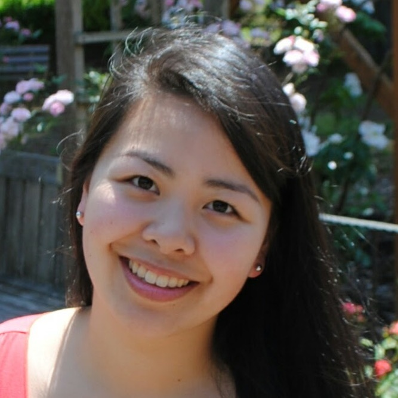
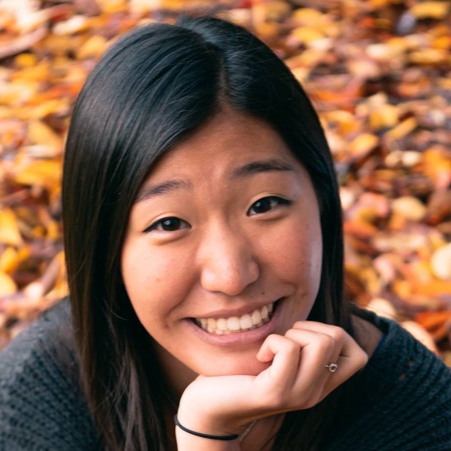
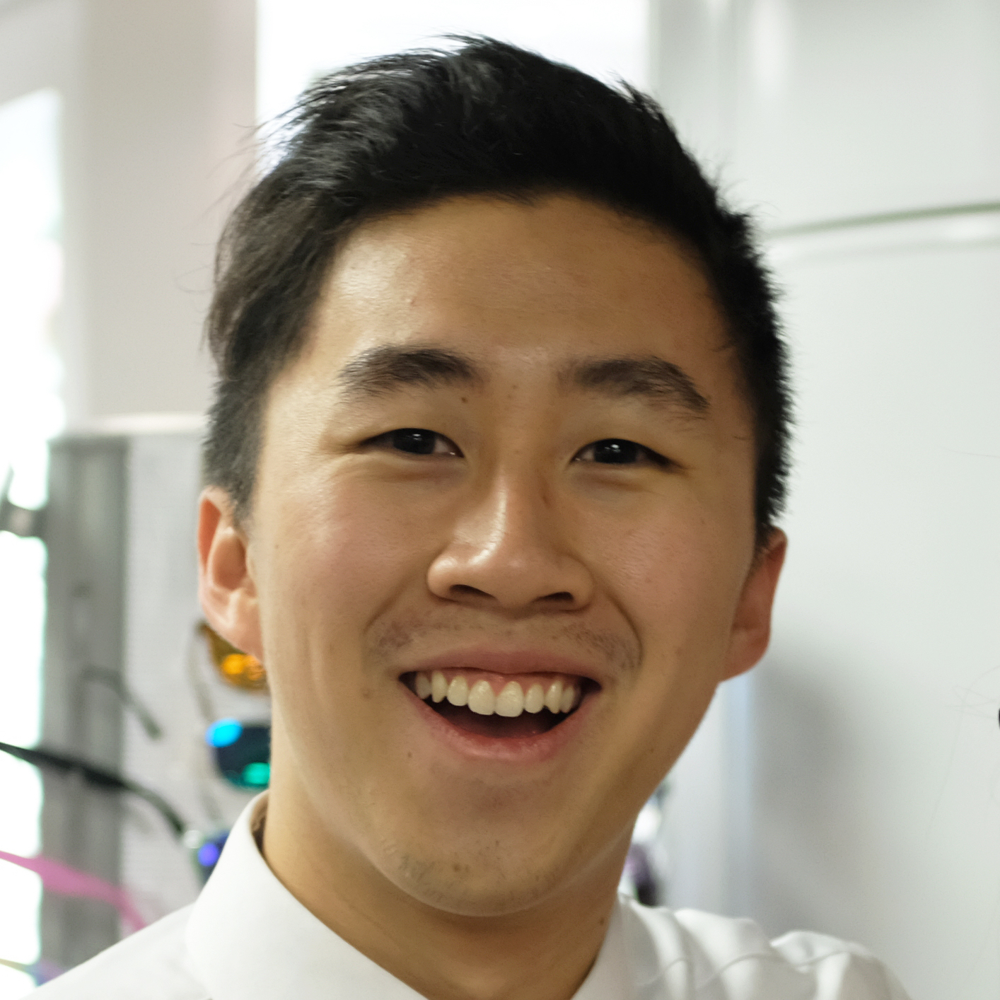
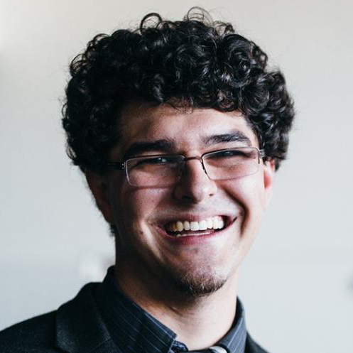

Our wedding ceremony will begin at 1:30 PM on August 5th, 2017.
Calvary Christian Assembly
6801 Roosevelt Way NE
Seattle, WA 98115
Click here for more information
Please be sure to RSVP by July 1, 2017. Use the link below to RSVP or to look up your name for more event information.
Location
Calvary Christian Assembly
6801 Roosevelt Way NE
Seattle, WA 98115
Directions
Click here for more information
Please be sure to RSVP by July 1, 2017. Use the link below to RSVP or to look up your name for more event information.
Hotel Room Blocks
We have reserved a hotel block for our guests at the Hampton Inn & Suites Seattle-North/Lynnwood.
To reserve your stay, visit the Hwee and Wong Wedding weblink, or call the hotel directly at 425.771.1888 and ask for the Hwee/Wong wedding rate. Please book your reservation before July 5, 2017.
To reserve your stay, visit the Hwee and Wong Wedding weblink, or call the hotel directly at 425.771.1888 and ask for the Hwee/Wong wedding rate. Please book your reservation before July 5, 2017.
Bridesmaids

Maid of Honor: Heather Hwee
Hardworking, generous, easy-going. She’s always ready to serve the people around her, and there’s never a dull moment when she’s around! I also admire her self discipline among many other traits.
Maid of Honor: Carla Hwee
Caring, talented, strong. Besides being a skilled artist, musician, and writer, she always makes time to care deeply for her friends. I’m not-so-secretly thrilled that we’re sometimes in the music building together - I’ll take all the time I can get with her!

Jennifer Hwee
Honest, relatable, kind. I always love the time we get to spend together, and even though we’ve never lived in the same city, we always seem to connect no matter what! Now that we’ve gotten older, our friendship has blossomed. I’m so thankful to have a cousin and a treasured friend in the same person.

Rachelle Lee
Thoughtful, affirming, independent. We commiserate about things that make life hard and encourage each other to live intentionally. But we also laugh at ALL the dumb jokes together. Which makes it pretty much the best friendship ever.
Dinh Lee
Earnest, responsible, passionate. She’s always willing to go out of her way to help a friend, whether it’s by sharing insight, listening and caring, or taking care of details. She has such a beautiful servant’s heart and I’m so blessed to be journeying together with her!
Groomsmen

Best Man: Gerry Wong
Man of Kindness. Gerry always puts others before himself. This guy goes above and beyond everyday to care for his family and friends, and it’s safe to say our lives are better with him around. Couldn’t ask for a better brother to grow up with!
Anthony Chang
Man of Perseverance. I don’t know how this guy does it, but when life gets tough, he always seems to be able to handle it with gentle grace. He’s been there for me through many tough times in my life. He is a living reminder of why each and everyday I cannot give up.

Elliot Saba
Man of Peace. Wise and a great conflict resolver, Elliot also has the ability to instill confidence and promote harmony. He’s someone I lean on when I have doubts and fears. Somehow he always seems to have a well thought-out answer for everything in life, from rocket science to personal faith. And seriously, how can you resist those beautiful curls. I know I can’t.
Joe Mar
Man of faithfulness. Joe is committed to excellence in everything he does. From the small things (like his style of clothing) to the big things (like his spiritual walk), he’s earnestly seeking and growing everyday. His authenticity is truly contagious and I’m thankful that he trusts me enough to confide in me. He’s also one of the most generous people I know and is always investing in the people he cares for.
Dillon Eng
Man of Integrity. I had the opportunity to lead small group with Dillon a couple years ago and I learned that he’s someone who diligently and consistently seeks the Lord. I admire his knowledge of the word and how he’s always treating people with the upmost respect. Fast forward to today: we've become neighbors, and we push each other to grow stronger physically (by working out together) and spiritually (by being in fellowship together)!
Our Story
We first got to know each other better while playing card games with mutual friends at a church retreat in 2010. Britanee started school at UW that fall and Geo would visit her in the music building all the time. It took a while, but she eventually realized that this guy wasn’t visiting her and hanging out just because it was “convenient” for him to be around - he was actually interested! After almost a year and a half of “hanging out”, we finally began dating on a windy day in March 2012 during an outing to Gasworks park. Since then, it’s been a whirlwind of graduating, job hunting, fellowship, ministry, and striving to build a relationship on God’s love for us. Four and a half years’ worth of dates later, Geo proposed on the same hill at Gasworks in front of friends and family (there were roses and music and maybe tears involved… you can imagine the rest as you will!). It’s been a journey of both highs and lows, but God has been so faithful to keep us close to him and to each other, and we’re continually blessed by a community that’s been supportive of us both as individuals and as a couple. We’re so thankful for your love and we can’t wait to see you all on the big day!
Geoffrey & Britanee
Explore Seattle
Seattle Aquarium
On the date that Geo proposed, we went on a date at the Seattle Aquarium. Britanee is entranced by sharks and other big fish. What’s not to love here!
On the date that Geo proposed, we went on a date at the Seattle Aquarium. Britanee is entranced by sharks and other big fish. What’s not to love here!
Woodland Park Zoo
One of the first places we enjoyed as a couple! We once took an over the top blurred-background photo together here that Britanee is still embarrassed about.
One of the first places we enjoyed as a couple! We once took an over the top blurred-background photo together here that Britanee is still embarrassed about.
Seafair
This is one of the big festivals in Seattle that just so happens to be going on during the weekend of our wedding! It’s a great opportunity to join in some local fun.
This is one of the big festivals in Seattle that just so happens to be going on during the weekend of our wedding! It’s a great opportunity to join in some local fun.
Gasworks Park
The place where we first started dating and got engaged 4 years later. Also home to one of the best views in Seattle and an excellent place to watch the sunset!
The place where we first started dating and got engaged 4 years later. Also home to one of the best views in Seattle and an excellent place to watch the sunset!
Pike Place Market
The doughnut holes are for eating and the flowers are for making people happy. Visit the [in]famous gum wall and get a pastry at Piroshky Piroshky bakery!
The doughnut holes are for eating and the flowers are for making people happy. Visit the [in]famous gum wall and get a pastry at Piroshky Piroshky bakery!
Kerry Park
Gives Gasworks a run for its money when it comes to a classic view of Seattle! Also nearby to Sushiland and Molly Moon’s Ice Cream, which is never a bad thing.
Gives Gasworks a run for its money when it comes to a classic view of Seattle! Also nearby to Sushiland and Molly Moon’s Ice Cream, which is never a bad thing.